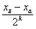

4.2.2. İterasyonların Sona Erdirilmesi
Yarılama yönteminde iterasyonlara ne kadar devam edilebileceği belirlenebilir. Bunun için ikinci xor kökü bulunduktan sonra,  farkı hesaplanır. Elde edilen değer, bir hata sınırından, yada bir başka deyişle “hata toleransından” büyük ise diğer iterasyona geçilir. O halde
farkı hesaplanır. Elde edilen değer, bir hata sınırından, yada bir başka deyişle “hata toleransından” büyük ise diğer iterasyona geçilir. O halde  hata sınırı
hata sınırı
için, k. adımda,
ise iterasyona son verilir. İterasyonlara ne kadar devam edileceği, daha başlangıçta belirlemek mümkündür. Bunun için başlangıçtaki [xa,xü] aralığının boyutu göz önüne alınarak,  bağıntısı kullanılır. Bu aralık için  hata sınırı olmak üzere, aralık boyutunun
hata sınırı olmak üzere, aralık boyutunun  ‘den küçük olması beklenir.
‘den küçük olması beklenir.
Buradan, her iki tarafın logaritması alınarak,
elde edilir. Bu bağıntı bir hata sınırına uygun k iterasyon sayısını elde etmede kullanılır.